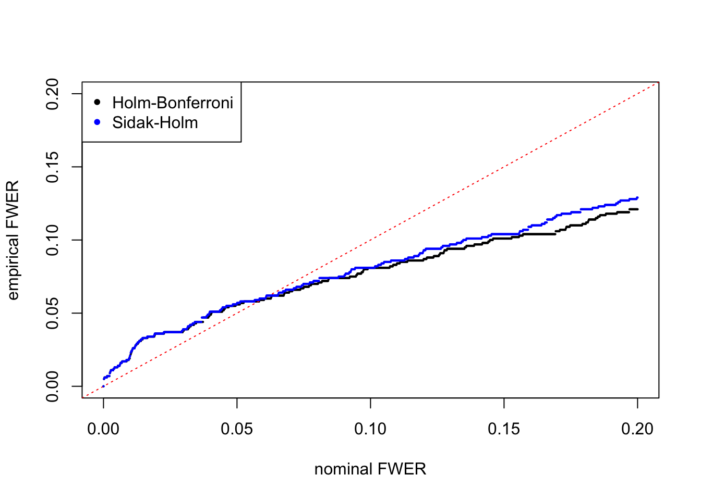

Step-Down Multiple Comparison Procedures on Simulated Correlated Null to Control FWER
Lei Sun
2016-11-29
Last updated: 2017-02-03
Code version: 36c1e4c
In order to understand the behavior of extreme \(p\)-values obtained by simulation from GTEx data under the global null, we apply two “step-down” multiple comparison procedures on the \(p\)-values. If the most extreme \(p\)-values are never “too extreme” as Matthew observed, “step-down” procedures, starting with the most extreme \(p\)-values, should satisfactorily control FWER, even with generally inflated \(z\)-scores and hence skewed \(p\)-values.
The two “step-down” multiple comparison procedures are referenced in Prof. Emmanuel Candes’s online lecture notes [1][2].
Holm-Bonferroni’s procedure
First, order the \(p\)-values
\[ p_{(1)} \leq p_{(2)} \leq \cdots \leq p_{(n)} \]
and let \(H_{(1)}, H_{(2)}, \ldots, H_{(n)}\) be the corresponding hypotheses. Then examine the \(p\)-values in order.
Step 1: If \(p_{(1)} \leq \alpha/n\) reject \(H_{(1)}\) and go to Step 2. Otherwise, accept \(H_{(1)}, H_{(2)}, \ldots, H_{(n)}\) and stop.
Step \(i\): If \(p_{(i)} \leq \alpha / (n − i + 1)\) reject \(H_{(i)}\) and go to step \(i + 1\). Otherwise, accept \(H_{(i)}, H_{(i + 1)}, \ldots, H_{(n)}\) and stop.
Step \(n\): If \(p_{(n)} \leq \alpha\), reject \(H_{(n)}\). Otherwise, accept \(H_{(n)}\).
Hence the procedure starts with the most extreme (smallest) \(p\)-value and stops the first time \(p_{(i)}\) exceeds the critical value \(\alpha_i = \alpha/(n − i + 1)\).
It can be shown that Holm’s procedure controls the FWER strongly, under arbitrary correlation among \(p\)-values.
Sidak-Holm’s procedure
Similar to Holm-Bonferroni’s, only to replace thresholds \(\alpha/n, \alpha/(n-1), \ldots, \alpha\) with \(1 - (1 - \alpha)^{1/n}, 1 - (1 - \alpha)^{1/(n-1)}, \ldots, 1 - (1 - \alpha)^{1}\). Sidak-Holm is more powerful than Holm-Bonferroni; however, it controls FWER only when \(p\)-values are independent. Although we certainly don’t have independent \(p\)-values, nevertheless we hope to see if Sidak-Holm can control FWER for our simulated data.
The theoretical result tells us that Holm-Bonferroni controls FWER under any circumstances (arbitrary correlation) whereas Sidak-Holm is guaranteed to control FWER only when p-values are independent. On the other hand, both procedures control FWER very conservatively; that is, under respective assumptions, both procedures are guaranteed to have FWER \(< \alpha\), not \(= \alpha\).
Result
holm = read.table("../output/p_null_liver_holm.txt")
sidak = read.table("../output/p_null_liver_sidak.txt")
alpha = seq(0, 0.2, length = 1000)
fwer_holm = fwer_sidak = c()
for (i in 1:length(alpha)) {
fwer_holm[i] = mean(apply(holm, 1, function(x) {min(x) <= alpha[i]}))
fwer_sidak[i] = mean(apply(sidak, 1, function(x) {min(x) <= alpha[i]}))
}
plot(alpha, fwer_holm, pch = 20, xlab = "nominal FWER", ylab = "empirical FWER", xlim = c(0, max(alpha)), ylim = c(0, max(alpha)), cex = 0.25)
abline(0, 1, lty = 3, col = "red")
points(alpha, fwer_sidak, col = "blue", pch = 20, cex = 0.25)
legend("topleft", c("Holm-Bonferroni", "Sidak-Holm"), col = c(1, "blue"), pch = 20)
When \(\alpha > 0.10\), we can see that empirical FWER \(<\) nominal FWER, even though we would have inflated (not so extreme) \(p\)-values coming into play, suggesting a certain level of conservativeness. When \(\alpha\) is small, though, we do see in this simulation run empirical FWER \(>\) nominal FWER, but I would argue that it’s actually not that big. For example, when nominal FWER \(= 0.05\), empirical FWER of Holm_Bonferroni is \(0.056\) and that of Sidak-Holm is \(0.057\), fairly close to \(0.05\). Second, simulations with smaller \(\alpha\) might be more prone to randomness in the simulation.
Here is another simulation, with only the random seed changed from \(101\) to \(1\) but nothing else.


{kind=link}
{kind=link}
This simulation only change the random seed from \(101\) to \(1\) but nothing else, and empirical FWER for both procedures looks much better. I’m thinking it shows that VOOM does give \(p\)-values marginally uniform under the global null, and starting with most extreme \(p\)-values for correlated null data could control FWER.
The code to generate adjusted \(p\)-values are stored in StepDown.R
Session Information
sessionInfo()R version 3.3.2 (2016-10-31)
Platform: x86_64-apple-darwin13.4.0 (64-bit)
Running under: macOS Sierra 10.12.3
locale:
[1] en_US.UTF-8/en_US.UTF-8/en_US.UTF-8/C/en_US.UTF-8/en_US.UTF-8
attached base packages:
[1] stats graphics grDevices utils datasets methods base
loaded via a namespace (and not attached):
[1] backports_1.0.5 magrittr_1.5 rprojroot_1.2 tools_3.3.2
[5] htmltools_0.3.5 yaml_2.1.14 Rcpp_0.12.9 stringi_1.1.2
[9] rmarkdown_1.3 knitr_1.15.1 git2r_0.18.0 stringr_1.1.0
[13] digest_0.6.11 workflowr_0.3.0 evaluate_0.10